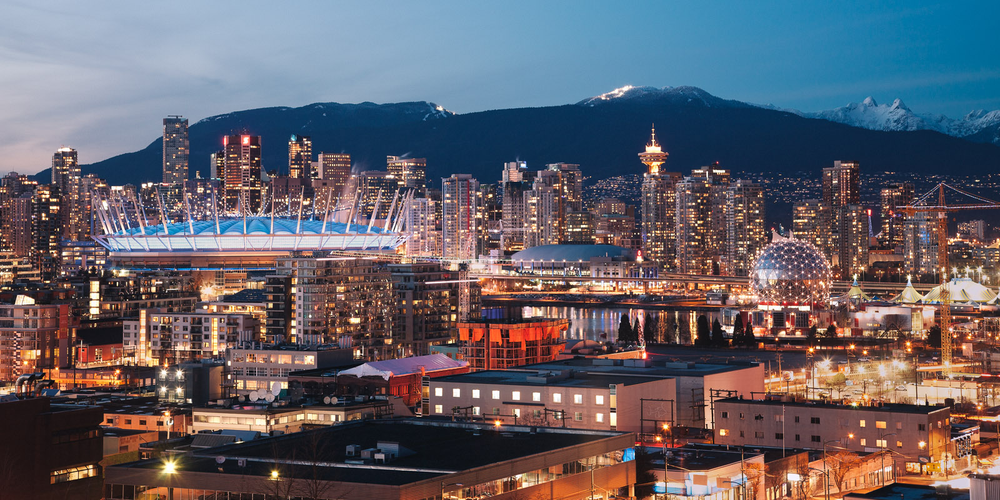

The Problem Isn't Vancouver's Astronomical Housing Costs - It's The People Who Buy
← Back to home Earlier this week, a report surfaced from the Economist on how Vancouver is the second most expensive city in the world to live in (after Hong Kong) as measured by median house prices to household income. The main purpose of the article is to actually question how this can be possible — after all, we only hear of London, New York & Hong Kong being overly expensive to live in. What’s going on over there in little Canada?
People in Vancouver love to talk about housing costs as they would talk about sports. The real estate agents are the ones who are playing the game, and the rest of us sit and speculate on “when this will all crash?”. Usually each conversation ends with an apathetic “aww shucks” attitude. After all — what can you do? This is a dangerous attitude and completely misses a systemic problem that Vancouver faces, that we need to fix soon. This article is about the real issue — the people who move here, and how it affects the long term prospects of this great city.
I’d like to structure this article into three separate sections:
1 — Why Prices Won’t Go Down
Speculation is an irrelevant activity, no-one can predict the future. (although many claim to) I’m not smart enough to predict the supply and demand of housing in Vancouver — so I’m not going to try. Instead, I’m going to reference an excellent piece on optionality that I found that I believe explains perfectly why house prices will most likely never go down here.
If there are enough rich people in China who want property in Vancouver, prices can float out of reach of the people who actually live and work there. So just because prices look out of whack doesn’t necessarily mean there’s a bubble. Instead, wealthy foreigners are rationally overpaying, in order to protect themselves against risk at home. And the possibility of losing a little money if prices subside won’t deter them. Yan says, “If the choice is between losing ten to twenty per cent in Vancouver versus potentially losing a hundred per cent in Beijing or Tehran, then people are still going to be buying in Vancouver. — http://www.newyorker.com/talk/financial/2014/05/26/140526ta_talk_surowiecki Did you notice what the number one most expensive city is to live in? Is it any wonder that Vancouver seems “cheap” to those people moving over from Hong Kong?
2 — The Real Problem Isn’t the Cost Of A House
If you believe in the above sentiment, you therefore believe high housing costs are here to stay. People generally accept this. That being said, I think there is a much larger issue that we need to speak about — and that’s the type of person who is buying these homes.
Two types of people own homes in Vancouver — wealthy foreigners who are looking for a place to park their money, and long-time Vancouver residents who have benefited from skyrocketing equity, through no actual effort of their own. There is a simple problem with these people being the primary homeowners in any city — they don’t actually create much value for the place they live in.
A very large percentage of wealthy foreigners who “park” their money here don’t actually live in Vancouver. Take a drive around most expensive areas and you’ll realize the homes are empty. At most, they send their kids to live in Vancouver, learn english/go to school, and then return to their country (usually to Hong Kong). For some reason this is okay with people who live here. The amount of value added to a city from this sort of activity approaches zero. In fact, I’d argue that these people actually leech off of the system more than anything else.
Cities are nothing more than a collection of individuals who occupy an area based on a number of social factors: family, employment, access to lifestyle, climate, etc… And as a collection of people, the value of a city lives and dies with the quality of those people.
The secret that no-one actually wants to talk about is that the quality of a city is mostly determined by a simple factor — the number of smart, ambitious people who live there. These people are the ones who want to drive that city forward by investing in opening businesses, donating their time to the arts & community, participating in city planning, etc… Without them, growth wouldn’t happen and you wouldn’t get all of the benefits that great cities enjoy.
The biggest contributor to the decline of a great city is simple — it’s the decline of those smart people. When they decide that the cost of living in a place outweighs the benefit, they move. They don’t just take their money with them, they take their intellectual and future capital with them. This is dangerous. When people aren’t willing to make an investment in a place to live any more, the city doesn’t just lose their taxes for the year, they lose a massive function of potential jobs created, culture added and future capital they can put to work.
There are a couple of ways to drive people out of a city: high crime rates (Detroit), awful climate (east coast North America) and high housing costs. The caveat with high housing costs is that they are actually fine if the median income of an area matches or grows with housing costs. That’s why places like London, San Francisco & New York actually are actually still doing fine — people are moving to these cities and making lots of money.
The mind boggling thing about Vancouver is that the benefits are massive — insanely good city planning, great safety, a great climate, one of the most beautiful nature-driven places on earth, etc… And yet a single cost — housing, threatens to get rid of all of these good things.
When you drive smart people out of a city by letting zero-value people in, you create a deep asymmetry that is difficult to fix. The right thing to do is so obvious — lower housing costs by any measure & keep smart people in, that it’s fascinating that we struggle so mightily with this issue. How do we fix it?
3 — How to fix this
The biggest factor we need to address is our priorities as a city. Building a new bike lane isn’t a problem — who cares. The number one concern for our city should be to invest in the right kind of people for the future.
Immigration is the number one contributor in most countries to new jobs. In America, around 50% of all founders/CEO’s of the Fortune 500 are immigrants. 40-50% of all new jobs created are by small businesses run by immigrants. It’s a beautiful thing. When people move to a new country or city, and want to contribute to that place, amazing things happen. They sacrifice their immediate term pleasures for the long-term betterment of their lives and the community around them. When they are successful, they then turn around and help those who are just starting out.
We need to foster an immigration system that rewards people who want to be here to build a better life. They should want to contribute to the overall ecosystem — mostly through job creation. More high-skilled (read: non-retail/services) jobs mean more income for citizens, which mean median income goes up, which means people can afford to buy homes, which means people will have families & stay here for longer. The nice thing about attracting smart people to a city is that it actually has an exponential effect — smart people want to be where other smart people are.
So #1 — create a much stricter immigration policy. This is easier said than done and most likely won’t happen, so let’s go to option #2.
IF you want to buy a home in Vancouver to “park” your money here (aka you won’t live here and you won’t create any value) then we are going to force value out of you. I propose that we create a “tax” equal to 1x the value of a home that goes straight into a fund that will encourage small businesses to start up. The average cost of a home in Vancouver is now $1,000,000. So for every million dollar home sold — $1M will go into the fund. Don’t like it? Go park your money somewhere else — the nice effect is that this should also decrease the demand for houses and naturally decrease prices. BUT, if people feel that the cost is still worth it — we will add millions of dollars to a fund that will go straight to the people adding value in the city. The key here must be the people actually managing the money. They need to be entrepreneurs themselves, not risk-averse accountants or consultants who don’t know anything about business.
#3 — reward those people who actually add value. Want to start a business? Are you already employing people? How about no taxes for 10 years? (NY state does this). How about free initial office space? How about subsidized education? Become pro-small business, the economic factor that will actually add jobs to your economy.
#4 — beg, borrow and do anything legal to encourage real companies to open Canadian HQ’s here. Amazon is adding 1000+ jobs to Vancouver as soon as Telus Garden opens, Microsoft already has plans to employ about ~1000 people here. Those workers will make ~100k each — which means they can spend a large amount of that money as discretionary income. Wake up and realize that this is incredibly positive for a region — besides making 100k a year these are smart people who will move to this city. Remember what I said about smart people.
#5 — give massive incentive to real estate developers to build an oversupply of condos/houses. Force prices to drop by simply moving the supply/demand curve. We are already starting to do this — but it’s not moving fast enough.
Vancouver is an amazing place to live, but we need to be careful we don’t destroy what we have wonderful attributes we currently have. The solutions I propose above certainly aren’t the only ones, or even the correct ones, but it’s a start. By recognizing the real issues at hand, I believe we can start to work towards building a Vancouver that is accessible to everyone.